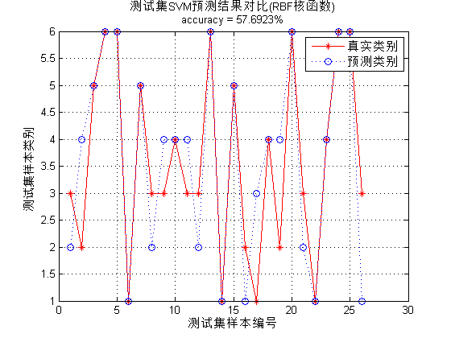

Contents
I. 清空环境变量
clear all
clc
II. 导入数据
load BreastTissue_data.mat
1. 随机产生训练集和测试集
n = randperm(size(matrix,1));
2. 训练集——80个样本
train_matrix = matrix(n(1:80),:); train_label = label(n(1:80),:);
3. 测试集——26个样本
test_matrix = matrix(n(81:end),:); test_label = label(n(81:end),:);
III. 数据归一化
[Train_matrix,PS] = mapminmax(train_matrix');
Train_matrix = Train_matrix';
Test_matrix = mapminmax('apply',test_matrix',PS);
Test_matrix = Test_matrix';
IV. SVM创建/训练(RBF核函数)
1. 寻找最佳c/g参数——交叉验证方法
[c,g] = meshgrid(-10:0.2:10,-10:0.2:10); [m,n] = size(c); cg = zeros(m,n); eps = 10^(-4); v = 5; bestc = 1; bestg = 0.1; bestacc = 0; for i = 1:m for j = 1:n cmd = ['-v ',num2str(v),' -t 2',' -c ',num2str(2^c(i,j)),' -g ',num2str(2^g(i,j))]; cg(i,j) = svmtrain(train_label,Train_matrix,cmd); if cg(i,j) > bestacc bestacc = cg(i,j); bestc = 2^c(i,j); bestg = 2^g(i,j); end if abs( cg(i,j)-bestacc )<=eps && bestc > 2^c(i,j) bestacc = cg(i,j); bestc = 2^c(i,j); bestg = 2^g(i,j); end end end cmd = [' -t 2',' -c ',num2str(bestc),' -g ',num2str(bestg)];
2. 创建/训练SVM模型
model = svmtrain(train_label,Train_matrix,cmd);
V. SVM仿真测试
[predict_label_1,accuracy_1] = svmpredict(train_label,Train_matrix,model); [predict_label_2,accuracy_2] = svmpredict(test_label,Test_matrix,model); result_1 = [train_label predict_label_1]; result_2 = [test_label predict_label_2];
Accuracy = 96.25% (77/80) (classification) Accuracy = 57.6923% (15/26) (classification)
VI. 绘图
figure plot(1:length(test_label),test_label,'r-*') hold on plot(1:length(test_label),predict_label_2,'b:o') grid on legend('真实类别','预测类别') xlabel('测试集样本编号') ylabel('测试集样本类别') string = {'测试集SVM预测结果对比(RBF核函数)'; ['accuracy = ' num2str(accuracy_2(1)) '%']}; title(string)